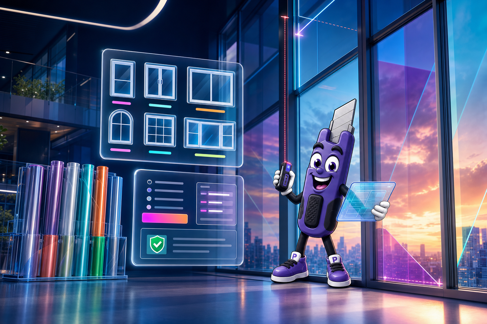

Projetos que pedem escala
Do primeiro vão à fachada completa.
Cadastre ambientes, agrupe medidas, compare películas e entregue propostas profissionais para residências, escritórios e fachadas.
- ✓ Medidas por ambiente e abertura
- ✓ Comparativo de películas na proposta
- ✓ Acompanhamento por peça aplicada